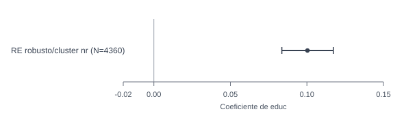

Efectos aleatorios en panel salarial: eficiencia bajo un supuesto fuerte
Random effects en salarios: eficiencia, heterogeneidad inobservable y limites de identificación sin contraste RE vs FE
En este panel salarial, RE ofrece eficiencia y conserva regresores invariantes, pero depende de un supuesto exigente
La especificación de efectos aleatorios es útil para modelar heterogeneidad no observada y mantener variables como educ, siempre que sea defendible el supuesto corr(c_i, x_it)=0.
Modelo operativo
RE + cluster
xtreg ..., re vce(cluster nr)
Componente individual
rho = 0.46
Fraccion relevante de varianza atribuida a c_i
Test H0: var(c_i)=0
Z = 10.66
Rechazo fuerte: la estructura panel importa
Supuesto clave RE
corr(c_i,x_it)=0
Sin Hausman en T5, no hay validación empírica de este supuesto
Resumen
Este caso presenta una especificación de efectos aleatorios para salarios en panel. El mensaje central es doble: RE puede ser eficiente y, además, permite conservar regresores invariantes en el tiempo como educ, pero su interpretación depende de un supuesto estructural fuerte sobre la relación entre heterogeneidad inobservable y regresores.
Pregunta
¿Cómo usar RE en un panel salarial para obtener eficiencia y mantener variables invariantes en el tiempo, sin sobreafirmar identificación cuando no se contrasta RE frente a FE?
Variable dependiente: lwage (log del salario por hora). Regresores centrales: educ, exper, expersq, union, married, black. Panel: nr (1980-1987).
Idea central
RE no solo ofrece una vía eficiente para modelar heterogeneidad no observada bajo corr(c_i, x_it)=0, sino que también permite conservar regresores invariantes en el tiempo, como educ, que son relevantes En esta aplicación.
Portfolio econométrico
Por qué este problema importa
En paneles salariales, parte de la variación de lwage responde a rasgos persistentes del individuo que no observamos directamente. Ignorar ese componente puede degradar el modelado del error compuesto.
En términos aplicados, esta especificación ayuda a estudiar diferencias salariales entre trabajadores cuando interesa separar lo que cambia en el tiempo (por ejemplo, experiencia o estado sindical) de rasgos relativamente estables de cada persona. Por eso el formato panel es natural en este ejemplo: permite seguir a los mismos trabajadores y distinguir mejor patrones persistentes de variaciones anuales.
La propuesta RE captura esa heterogeneidad como parte de la estructura estocástica y, al mismo tiempo, evita perder covariables invariantes en el tiempo. Ese beneficio viene con una condición fuerte de exogeneidad entre c_i y los regresores.
En este caso, preservar educ no es solo una conveniencia técnica frente a FE: es sustantivamente relevante porque la escolaridad es una variable central para describir diferencias salariales entre trabajadores y forma parte del nucleo interpretativo del ejercicio.
Datos y variables
Se trabaja con el panel wagepan (N = 4360 observaciones, 545 individuos, 8 periodos).
- Variable dependiente:
lwage(log del salario por hora) - Regresores:
educ,exper,expersq,union,married,black - Unidad de panel: individuo (
nr) - Especificacion principal:
xtreg ..., re vce(cluster nr)
Estrategia empírica
La secuencia econométrica de T5 es:
- Estimar RE clásico (
xtreg ..., re) para obtener coeficientes y descomposicion de varianza. - Reestimar RE con inferencia robusta/cluster por individuo.
- Evaluar la relevancia del componente individual con
rho. - Contrastar
H0: var(c_i)=0con el estadisticoZreportado en el taller. - Reportar chequeos secundarios de especificación (dummies de año) sin mover el mensaje principal.
Qué pasa con un análisis ingenuo
Una lectura ingenua puede confundir eficiencia con identificación. RE puede estimar de forma eficiente bajo su estructura, pero eso no implica automáticamente que la condición corr(c_i, x_it)=0 sea valida en los datos.
Por eso, en este taller se presenta RE como especificación operativa condicional a un supuesto estructural, no como veredicto definitivo frente a FE.
Resultados principales
La evidencia principal del caso se concentra en comparar la magnitud de educ entre RE y especificaciones de referencia, manteniendo rho y H0: var(c_i)=0 como respaldo metodológico secundario.
En lectura aplicada, ese coeficiente resume una asociación salarial estimada positiva entre mayor escolaridad y lwage dentro de esta especificación RE; no debe leerse automáticamente como una estimación libre de sesgo ni extrapolarse fuera de este marco sin evidencia adicional.
| Modelo | Coef. educ |
Error estándar | IC 95% | Lectura |
|---|---|---|---|---|
| RE clásico | 0.1004 | 0.0087 | [0.0833, 0.1175] | Magnitud base en RE |
RE robusto/cluster nr |
0.1004 | 0.0086 | [0.0835, 0.1172] | Modelo operativo para inferencia |
| FGLS AR(1)+hetero (contraste) | 0.1044 | 0.0038 | [0.0969, 0.1119] | Contraste paramétrico más exigente |
Pooled OLS + cluster nr (referencia) |
0.0988 | 0.0089 | [0.0812, 0.1163] | Referencia previa sin estructura RE |

Hallazgos secundarios y especificación
El test conjunto de dummies de año en la especificación RE ampliada reporta chi2(7)=12.58 con p=0.0831. Se registra como hallazgo secundario de especificación, no como mensaje central del taller.
| Chequeo secundario | Resultado | Lectura |
|---|---|---|
Componente individual (rho) |
0.4600 | Heterogeneidad persistente importante |
Test H0: var(c_i)=0 |
Z=10.66, p<0.001 |
Respalda tratar explícitamente la estructura panel |
| Test conjunto d81-d87 | p = 0.0831 | Evidencia debil al 5%; contraste auxiliar de especificación |
Lectura profesional del caso
T5 aporta una regla de trabajo clara: RE puede ser una alternativa eficiente y practicamente útil cuando interesa preservar regresores invariantes como educ.
Pero la validez econométrica de esa elección sigue siendo condicional al supuesto corr(c_i, x_it)=0. Sin una prueba tipo Hausman en este taller, no corresponde afirmar que RE sea preferible a FE ni que sea empiricamente insesgado.
Cierre
Esta pieza posiciona a RE como una especificación operativa bajo un supuesto fuerte, no como cierre definitivo de identificación. Como benchmark aplicado, habilita una lectura ordenada de diferencias salariales cuando interesa retener variables invariantes como educ y reconocer heterogeneidad persistente entre trabajadores. Lo que queda pendiente antes de afirmar que RE es preferible a FE es contrastar de forma explícita el supuesto corr(c_i, x_it)=0, por ejemplo con una prueba tipo Hausman.